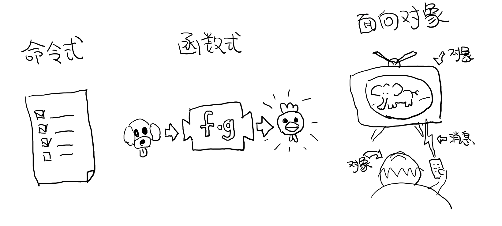
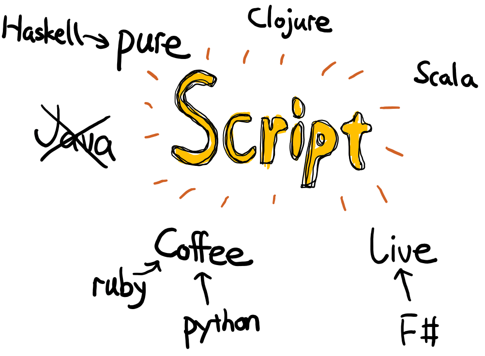
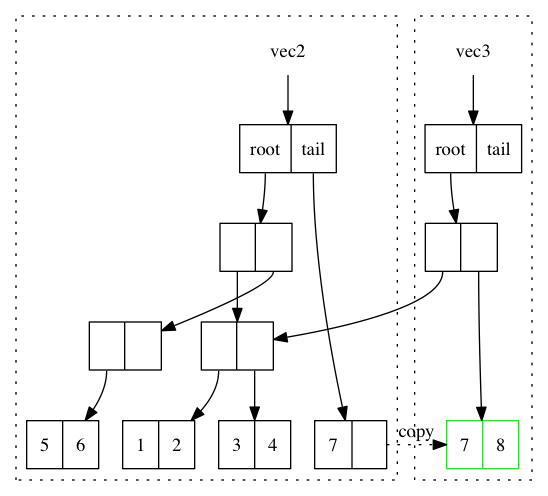
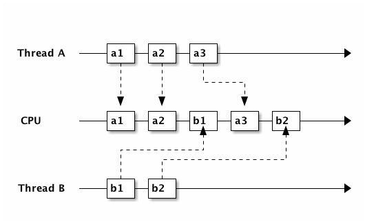
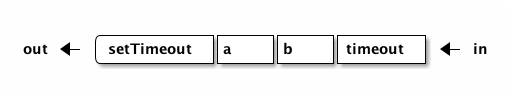

Clojure Flavored JavaScript
1 前言
1.1 最好在看本书之前
1.1.1 能看懂JavaScript代码
这既不是一本介绍 Clojure 也不是介绍 JavaScript 的书，这是一本介绍如何用 JavaScript 函数式编程的书。其中一些函数式的思想和表现形式都借用了 Clojure，因此叫做 Clojure 风格的函数式 JavaScript，但是并不要求在读本书前会 Clojure1，而只需要能阅读 JavaScript 代码，那就足够了。 如果你会 Clojure，可以完全忽略我解释 Clojure 代码的段落，当然 JavaScript 的部分才是重点。
1.1.2 你可能买错书了，如果你是
想学 JavaScript
这不是一本 JavaScript 的教科书，这里只会介绍如何用 JavaScript 进行函数式编程，所以如果想要系统学习 JavaScript 的话，我猜看一看《JavaScript 语言精粹》已经足够了。另外如果读者的英文好的话，还有一本可以在线免费阅读的《JavaScript Allonge》。
想学 Clojure
同样的，这也不是 Clojure 的教科书，这里只含有一些用于阐述函数式编程思想的 Clojure 代码。作为副作用，你确实可以学到一些 Clojure 编程的知识，但很可能是非常零碎不完整的知识。如果是想要系统的了解和学习 Clojure 的话，非常推荐《The Joy of Clojure》2，另外，如果读者英文比较好，还有一本可以免费在线阅读的《CLOJURE for the BRAVE and TRUE》 也非常的不错。
函数式编程的专家
如果你已经在日常工作或学习中使用 Scala，Clojure 或者 Haskell 等函数式语言编程的话，那么本书对你在函数式编程上的帮助不会太大。 不过 ：这本书对解你从函数式语言迁移到 JavaScript 编程的不适应该是非常有效的，当然，这也正是本书的目的之一。
1.1.3 准备环境
在开始阅读本书之前，如果你希望能运行书中的代码的话，可能需要一些环境的配置。而且书中的所有源码和运行方式都可以在本书的 Github 仓库3中找到。当然如果你使用 emacs（同时还配置了 org babel 的话） 阅读本书的源码的话，对于大部分代码只需要光标放在在代码处按 c-c c-c 即可。
JavaScript
原生的 JavaScript 没有什么好准备的，可以通过 Node 或者 Firefox（推荐）的 Console 运行代码。当然第五章会有一些使用 sweet.js 写的 macro，则需要安装 sweet.js。
安装 Node/iojs
- 下载 nodejs
- 如果使用 mac，可以直接用 brew 安装
brew install node # 或者 brew install iojs
安装 sweet.js
在安装完 node 之后命令行输入：
npm install -g sweet.js
Clojure
书中的 Clojure 代码大多都用来描述函数式编程的概念，当然如果想要运行书中的 Clojure 代码，首先需要安装 JVM 或者 JDK，至少需要1.6，推荐安装1.8。
安装 leiningen
leiningen 是 clojure 的包管理工具，类似于 node 的 npm，ruby 的 bundle，python 的 pip。 另外 leinigen 还提供脚手架的功能。可以通过官网的脚本安装。 mac 用户可以简单的使用 brew install leiningen 安装。
安装完之后，就可以运行 lein repl 打开 repl，试试输入下列 clojure 代码，你将会立马看见结果。
(+ 1 1) ;=> 2
编辑器
如果更喜欢使用编辑器用来编辑更长一段的代码，我推荐非 emacs 用户使用 Light Table, intellij 用户对使用 cursive。当然如果读者已经在使用 Emacs，那就更完美了，emacs cider mode 是 Clojure 编程不错的选择。
1.2 本书中的代码
书中的所有源码和运行方式都可以在本书的 Github 仓库3中找到，书中几乎所有的例子都以测试的形式完成。并且，本书的文本源代码也在该仓库中，并且可以通过 https://oyanglul.us/clojure-flavored-javascript 访问到在线版。
1.3 代码风格约定
本书的 JavaScript 代码都遵循 Airbnb JavaScript Style Guide4 中的 ES5 和 React 的风格约定。
1.4 TODO 本书的组织结构
1.4.1 第一章
将介绍 JavaScript 的基本函数式背景，简要的介绍为什么要关心函数式编程，为什么说 Underscore 不够函数式，JavaScript 要作为完整的函数式语言还缺些什么？
1.4.2
1.5 本书使用的约定
本书使用以下字体排版约定。
1.5.1 斜体
表示新的术语。
1.5.2 等宽字体
代码清单，出现在段落之内则表示变量，函数名，关键字等。
1.5.3 粗体
重点概念。
1.5.4 下划线
需要填入的词，我可能已经帮大家填上了。
1.5.5 横线
可以忽略掉的词。
2 函数式 JavaScript
本章将介绍 JavaScript 的函数式背景：
- 为什么说 JavaScript 是函数式语言？
- 我们为什么要关心函数式编程？
- 为什么说 Underscore 不够函数式？
- 要作为完整的函数式语言，JavaScript 还缺些什么？
2.1 JavaScript 也是函数式语言?
说到 JavaScript 可能第一反应会是一门面向对象的语言。事实上，JavaScript 是基于原型（prototype-based）的 多范式 编程语言。也就是说面向对象只是 JavaScript 支持的其中一种范式而已，由于 JavaScript 的函数是一等公民，它也支持函数式编程范式。
2.1.1 编程范式
常见的编程范式有三种，命令式，面向对象以及函数式，事实上还有第四种，逻辑式编程。 如我们在大学时学过的C语言，就是标准的命令式语言。而如果你在大学自学过Java打过黑工的话，那么你对面向对象也再熟悉不过了吧。而可能大部分人（以为）接触函数式的机会比较少，因为它是更接近于数学和代数的一种编程范式。让我们分别看看这几种主要的编程范式。
命令式
这恐怕是我们最熟悉的编程范式了(大部分计算机课程都会是C)，命令式顾名思义就是以一条条命令的方式编程，告诉计算机我需要先做这个任务，然后另一个任务。还有一些控制命令执行过程的流控制，比如我们熟悉的循环语句：
for (let i = 0; i < 10; i++) { console.log('命令', i); }
当然还有分支语句，switch等等，都是用来控制命令的执行 过程 。
面向对象
这恐怕是目前最常见的编程范式了，绝大部分的工程项目的语言都会是面向对象语言。而面向对象的思想则更接近于现实世界，封装好的对象之间通过消息互相传递信息，以这种熟悉的方式来建模显然要更容易一线。面向对象有一些我们熟悉的概念组成，比如封装，继承，多态等等。而面向对象的思维主要是通过抽象成包含状态和一些方法的对象来解决问题，可以通过继承关系复用一些方法和行为。
函数式
函数式则更接近于数学，简单来说就是对表达式求值。跟面向对象有所不同的是函数式对问题的抽象方式是抽象成 带有动作的函数。其思维更像是我们小时候解应用题时需要套用各种公式来求解的感觉。当然函数式跟面向对象一样还包含了很多的概念，比如高阶函数，不可变性，惰性求值等等。

逻辑式编程
可能这个名词听的比较少，但是我们经常在用而却可呢过没有意识到的 SQL 的 query 语句就是逻辑式编程。所谓逻辑式，就是通过提问找到答案的编程方式。比如：
select lastname from someTable where sex='女' and firstname in ('连顺','女神')
这里问了两个问题：
- 性别是女？
- 名字必须是“连顺”或者“女神”？
那么得到的答案就是符合问题描述的结果集了。
除了最常见的 SQL，Clojure 也提供了 core.logic 的库方便进行逻辑式编程。5
2.1.2 JavaScript 的函数式支持
说了这么多种编程范式，JavaScript 对函数式的支持到底如何呢？
首先如果语言中的函数不是一等的，那么也就跟函数式编程也就基本划清界限了。比如 Java 8 之前的版本，值和对象才是一等公民，要写一个高阶函数可能还需要把函数包在对象中才行。6
幸好 JavaScript 中的函数是一等函数，所谓一等，就是说跟值一样都是一等公民，所有值能到的地方，都可以替换成函数。例如，可以跟值一样作为别的函数的参数，可以被别的函数想值一样返回，而这个“别的函数”叫做 高阶函数 。
函数作为参数
函数作为参数最典型的应用要数 map 了，想必如果没有使用过 Underscore，也或多或少会用过 ECMAScript 5 中 Array 的 map 方法吧。map 简单将一个数组转换为另一个数组。
[1, 2, 3, 4].map(function(x) { return ++x; });
可以看到函数 function(x){return x++} 是作为参数被传入 Array 的 map 方法中。map 是函数式编程最常见的标志性函数，想想在 ECMAScript 5 出来之前应该怎么做类似的事情：
var array = [1, 2, 3, 4]; var result = []; for (var i in array){ result.push(++i); }
这段命令式的代码跟利用 map 的函数式代码解决问题的方式和角度是完全不同的。命令式需要操心所有的过程，如何遍历以及如何组织结果数据。而 map 由于将遍历，操作以及结果数据的组织的过程封装至 Array 中，从而参数化了最核心过程。而这里的核心过程就是 map 的参数里的匿名函数中的过程，也是我们真正关心的主要逻辑。
函数作为返回值
函数作为返回值的用法可能在 JavaScript 中会更为常见。而且在不同场景下被返回的函数又有着不同的名字。
柯里化
我们把一个多参的函数变成一次只能接受一个参数的函数的过程叫做柯里化。如：
var curriedSum = curry(sum) var sum5 = curriedSum(5) var sum5and4 = sum5(4) //=> 9 sum5and4(3) // => 12
当然柯里化这样做的目的非常简单，可以部分的配置函数，然后可以继续使用这些配置过的函数。当然，我会在第四章函数组合那里更详细的解释为什么要柯里化，在这之前闲不住的读者可以先猜猜为什么要把柯里化放函数组合那一章。
thunk
thunk（槽）7 是指有一些操作不被立即执行，也就是说准备好一个函数，但是不执行，默默等待着合适的时候被合适的人调用。我实在想不出能比下图这个玩意更能解释 thunk 的了。 在下一章，你会见到如何用 thunk 实现惰性序列。

越来越函数式的ES6
ECMAScript 68终于正式发布了，新的规范有非常的新特性，其中不少借鉴自其他函数式语言的特性，给 JavaScript 语言添加了不少函数式的新特性。
虽然浏览器厂商都还没有完全实现 ES6 的所有规范，但是其实我们是可以通过一些中间编译器使用大部分的 ES6 的新特性，如
Babel
这是目前支持 ES6 实现最多的编译器了，没有之一。 主要是 Facebook 在维护，因此也可以编译 Facebook 的 React。这也是目前9能实现尾递归优化的唯一编译器。不过关于尾递归只能优化尾子递归，相互递归的优化还没有实现。
Traceur
Google 出的比较早得一个老牌编译器，支持的 ES6 也不少了。但是从 github 上来看似乎已经没有 babel 活跃了。
当然，除了这些也可以直接使用 FireFox。作为 ES6 规范的主要制定者之一的 Mozilla 出的 Firefox 当然也是浏览器中实现 ES6 标准最多的。
箭头函数
这是 ES6 发布的一个新特性，虽然 Firefox 支持已久了，不算什么新东西，但是标准化之后还是比较令人激动的。 箭头函数 也被叫做 肥箭头 （fat arrow）10，大致是借鉴自 CoffeeScript 或者 Scala 语言。箭头函数是提供词法作用域的匿名函数。
声明一个箭头函数
你可以通过两种方式定义一个箭头函数：
([param] [, param]) => {
statement
}
// 或者
param => expression
表达式可以省略块（block）括号，而多行语句则需要用块括号括起来。
为什么要用箭头函数
虽然看上去跟以前的匿名函数没有什么区别，我们可以对比旧的匿名函数是如何写一个使数组中数字都乘 2 的函数.
var a = [1, 2, 3, 4, 5]; a.map(function(x){ return x*2 });
而使用箭头函数会变成：
a.map(x => x*2);
使用箭头函数可以少写 function 和 return 以及块括号，从而让我们其实更关心的转换关系变得更明显。略去没用的长的函数关键字，其实可以让代码更简洁更可读。特别是在传入高阶函数作为参数的时候， map(x=>x*2) 更形象和突出的表达了核心变换逻辑。
尾递归优化
Clojure 能够通过 recur 函数对 尾递归 进行优化，但是 ES5 的 JavaScript 实现是不会对尾递归进行任何优化，很容易出现 爆栈 的现象。但是 ES6 的标准已经发布了对尾递归优化的支持，下来我们能做的只是等各大浏览器厂商的实现了。
不过在干等原生实现的同时，我们也可以通过一些中间编译器如 Babel，把 ES6 的代码编译成 ES5 标准 JavaScript，而在 Babel 编译的过程就可以把尾递归优化成循环。
Destructure
在解释 Destructure11之前，先举个生动的例子，比如吃在奥利奥的是时候，我的吃法是这样的：
- 掰成两片，一片是不带馅的，一份是带馅的
- 带馅的一半沾一下牛奶
- 舔掉中间夹心的馅
- 合起来吃掉
如果写成代码，大致应该是这样的：
var orea = ["top","middle","bottom"]; var top = orea.shift(), middleAndButton = orea; // <1> var wetMiddleAndButton = dipMilk(middleAndButton); // <2> var button = lip(wetMiddleAndButton); // <3> eat([top,button]); // <4>
注意那个诡异的 shift ，如果用 destructure 会写得稍微优雅一些：
var [top, ...middleAndButton] = ["top", "middle", "bottom"]; // <1> var wetMiddleAndButton = dipMilk(middleAndButton); // <2> var button = lip(wetMiddleAndButton); // <3> eat([top,button]); // <4>
有没有觉得我掰奥利奥的姿势变酷了许多？这就是 destructure，给定一个特定的模式 [top, ...middleAndButton] ，让数据 ["top","middle","bottom"] 按照该模式匹配进来。同样的，我将会专门在第6章介绍模式匹配这个概念，虽然它不是 Clojure 的重要概念，但是确实 Scala 或 Haskell 的核心所在。不过可以放心的是，你也不必在此之前先学习 Scala 和 Haskell，我还是会用最流行的 JavaScript 来介绍模式匹配。

2.2 作为函数式语言 JavaScript 还差些什么
作为多编程范式的语言，原型链支持的当然是面向对象编程，然而却同时支持一等函数的 JavaScript 也给函数式编程带来了无限的可能。之所以说可能是因为 JavaScript 本身对于函数式的支持还是非常局限的，为了让 JavaScript 全面支持函数式编程还需要非常多的第三方库的支持。下面我们来列一列到底 JavaScript 比起纯函数式语言，到底还差些什么？
2.2.1 不可变数据结构
首先需要支持的当然是不可变（immutable）数据结构，意味着任何操作都不会改变该数据结构的内容。JavaScript 中除了原始类型其他都是可变的（mutable）。相反，Clojure 的所有数据结构都是不可变的。
JavaScript 一共有6种原始类型（包括 ES6 新添加的 Symbol 类型），它们分别是 Boolean，Null，Undefined，Number String 和 Symbol。 除了这些原始类型，其他的都是 Object，而 Object 都是可变的。
比如 JavaScript 的 Array 是可变的：
var a = [1, 2, 3]; a.push(4);
a 的引用虽然没有变，但是内容确发生了变化。
而 Clojure 的 Vector 类型则行为刚好相反：
(def a [1 2 3]) (conj a 4) ;; => [1 2 3 4] a ;; => [1 2 3]
对 a 的操作并没有改变 a 的内容，而是 conj 操作返回 的改变后的新列表。在接下来的第二章你将会看到 Clojure 是如何实现不可变数据结构的。
2.2.2 惰性求值
惰性（lazy）指求值的过程并不会立刻发生。比如一些数学题（特别是求极限的）我们可能不需要把所有表达式求值才能得到最终结果，以防在算过程中一些表达式能被消掉。所以惰性求值是相对于及早求值（eager evaluation）的。
比如大部分语言中，参数中的表达式都会被先求值，这也称为 应用序 语言。比如看下面这样一个 JavaScript 的函数：
wholeNameOf(getFirstName(), getLastName())
getFirstName 与 getLastName 会依次执行，返回值作为 wholeNameOf 函数的参数， wholeNameOf 最后被调用。
另外，对于数组操作时，大部分语言也同样采用的是应用序。
map(function(x){return ++x}, [1, 2, 3, 4]);
所以，这个表达式立刻会返回结果 [1,2,3,4] 。
当然这并不是说 Javascript 语言使用应用序有问题，但是没有提供惰性序列的支持就是 JavaScript 的不对了。如果 map 后发现其实我们只需要前 10 个元素时，去计算所有元素就显得是多余的了。
2.2.3 函数组合
面向对象通常被比喻为名词，而函数式编程是动词。面向对象抽象的是对象，对于对象的的描述自然是名词。面向对象把所有操作和数据都封装在对象内，通过接受消息做相应的操作。比如，对象 Kitty 和 Pussy，它们可以接受“打招呼”的消息，然后做相应的动作。而函数式的抽象方式刚好相反，是把动作抽象出来，比如就是一个函数“打招呼”，而参数，则是作为数据传入的 Kitty 或者 Pussy，是完全透明的。比如 Kitty 进入函数“打招呼”时，出来的应该是一只 Hello Kitty 。
面向对象可以通过继承和组合在对象之间分享一些行为或者说属性，函数式的思路就是通过 组合 已有函数形成一个新的函数。JavaScript 语言虽然支持高阶函数，但是并没有一个原生的利于组合函数产生新函数的方式。关于函数组合的技巧，会在第四章作详细的解释，而这些强大的函数组合方式却往往被类似 underscore 库的光芒掩盖掉。
2.2.4 尾递归优化
Clojure 的数据结构都是不可变的，除了使用数据结果本身的方法进行遍历，另外的循环手段自然只能是递归了。但是在没尾递归优化的 JavaScript 中就不会那么愉快了。
在 JavaScript 中可能会经常看到这样的代码：
var a = [1, 2, 3, 4] var b = [4, 3, 2, 1] for (var i = 0; i < 4; i++){ a[i]+=b[i] } console.log(a); // => [5,5,5,5]
如果使用 Clojure 硬要做类似的事情通常只能使用 reduce 解决，代码会变成这样：
(loop [a [1 2 3 4] b [4 3 2 1] i (dec (count a))] (if (< i 0) a (recur (update a i #(+ % (get b i))) b (dec i))))
recur 看起来跟 for 循环非常类似，其实它是尾递归，如果把 loop 写成一个函数：
(defn zipping-add [a b i] (if (< i 0) a (recur (update a i #(+ % (get b i))) b (dec i)))) (zipping-add [1 2 3 4] [4 3 2 1] 3)
事实上效果是一样的，但是如果把 recur 想象成是 zipping-add ，明显能看出 zipping-add 是一个尾递归函数。
因此反过来看，若是要把尾递归换成循环是多么容易的一件事情，关键的是需要让解释器识别出来尾递归。
但是这不是 Clojure 的风格，亦不是函数式的风格。递归应该被认为是比较低级别的操作，像这种高级别的操作还是应该优先使用 map，reduce 来解决。
(map #(+ %1 %2) [1 2 3 4] [4 3 2 1])
Clojure 的 map 是个神奇的函数，若是给多个向量，他做的事情会相当于先 zip 成一个向量，再把向量的元素 apply 到组合子上。这样完全不需要循环和变量，得到了一段不需要循环和变量的简洁的代码。 但是，在写低级别的一些代码的时候，递归还是强有力的武器，而且尾递归优化能带来更好的性能，在第五章我会更详细的介绍不可变数据结构以及递归。
2.3 Underscore 你错了
如果提到 JavaScript 的函数式库，可能会联想到 Underscore12。Underscore 的官网解释是这样的：
Underscore 提供了100多个函数，不仅有常见的函数式小助手: map，filter，invoke，还有更多的一些额外的好处……
我就懒得翻译完了，重点是这句话里面的“函数式小助手”，这点我实在不是很同意。
2.3.1 跟大家都不一样的 map 函数
比如 map 这个函数式编程中比较常见的函数，我们来看看看 函数式语言 中都是怎么做 map 的：
Clojure：
(map inc [1 2 3])
其中 inc 是一个给数字加一的函数。
Haskell：
map (1+) [1,2,3]
同样 (1+) 是一个函数，可以给数字进行加一操作。
这是非常简单的 map 操作，应用函数 inc, (1+) 到数组 中的每一个元素。同样的事情我们试试用 Underscore 来实现一下：
_.map([1,2,3], function(x){return x+1})
感觉到有什么变化了吗？有没有发现参数的顺序完全不同了？好吧，你可能要说这并不是什么问题啊？不就是 map 的 api 设计得不太一样么？也没有必要保持所有的语言的 map 都是一样的吧？
在回答这个问题之前，我想再举几个例子，因为除了 Underscore，JavaScript 的函数式库还有很多很多：
R.map(function(x){return x+1}, [1,2,3])
fjs.map(function(x){return x+1}, [1,2,3])
应该不需要再多的例子了，不管怎么样看，underscore 的 map 是否都略显另类了呢？跟别的语言不一样就算了，跟其他 JavaScript 的函数式库都不一样的话，是不是有些说不过去了。 我猜 underscore 同学估计现在有种高考出来跟同学对答案，发现自己的答案跟别人的完全不一样的心情。
好吧，Underscore 先别急着认错，大家都这么做，肯定不是偶然。但是原因就说来话长了，我将会在第四章详细解释其他函数式语言/库为什么都跟 Underscore 不一样。13
当然我可不会选一个“另类”的库来阐述函数式编程。14我将像编程世界中最好的书《计算机程序的构造与解释》一样，我选择用 lisp 语言来阐述函数式编程概念，而用目前最流行的语言 —— JavaScript 15来实践函数式。当然我也不会真的用老掉牙的 scheme，因为所有前端开发者都应该知道，前端最唾弃的就是使用久的东西16，这样一来 Clojure 这门全新的现代 lisp 方言显然是最好的选择。
2.3.2 ClojureScript
Clojure 是跑着 JVM 上的lisp 方言，而 ClojureScript 是能编译成 JavaScript 的 Clojure。但是请不要把 ClojureScript 与 CoffeeScript，LiveScript，TypeScript做比较，就像每一行 Clojure 代码不能一一对应到 Java 代码一样，你可能很难像 CoffeeScript 对应 JavaScript 一样能找到 ClojureScript 与其编译出来的 JavaScript 的对应关系。

不管怎么样，ClojureScript 把 Clojure 带到了前端确实是非常令人激动的一件事情。就跟前端程序员能在后端写 JavaScript 一样，Clojure 程序员终于能在前端也能找到自己熟悉的编程姿势。但是如同 Clojure 于 Java 的交互一样（或者更坏）， ClojureScript 与 JavaScript 及JavaScript 的库的交互并不是那么容易，或者可以说，不那么优雅。而且前端开发者可能并不能很快的适应 lisp 语言，项目（特别是开源项目）的维护不能只靠懂 clojure 的少数开发者，所以如果能用最受欢迎的 JavaScript，又还能使用到 Clojure 的所有好处，那将再好不过了。幸运的是，Clojure 的持久性数据结构被 David Nolen17移植到了原生 JavaScript —— mori。
2.3.3 Mori
由于是移植的，所有的数据结构以及操作数据结构的函数都是 ClojureScript 保持一致，而且是作为 JavaScript 库，可以在原生 JavaScript 的代码中使用。显然 mori 是最适合用于前端函数式实践的库，当然也是本书为什么说是 Clojure 风格的函数式 JavaScript 的原因了。
选择 mori 的另一原因是因为它特别区别于其他的函数式库的地方——它使用 ClojureScript 的数据结构。也就是说从根本上消除了 JavaScript 可变的数据结构模型，更利于我们的进行函数式编程。
为了保持从风格上更类似于 Clojure，以及迁移 Clojure 中的一些 macro，本书中也使用了我写的一系列的 macro —— ru-lang18。更多的关于 macro 的讨论我会放到第五章。
当然，选择 mori 并不说明它是工程的上函数式类库的最佳选择，facebook 活跃维护的 Immutable.js 也是不错的选择。但是在这里，mori 确实是能将 Clojure 编程思想蔓延到 JavaScript 中的最好桥梁。
3 集合
本章主要介绍 Clojure 的集合数据结构。这是个无聊但是又很重要的章节, 可以说函数式编程最基本最重要的就是集合操作。本章会涉及：
- 一些集合类型。
- 如何操作集合。
- 一些组合子。
- 什么是以及为什么要惰性求值。
- 如何在 JavaScript 中使用 Clojure 的数据结构。
当然，已经熟悉 Clojure 的读者自然可以略过本章。
上一章大致提到了 JavaScript 的数据结构都是可变的数据结构。也就是说一些操作会改变数据结构中的数据内容。当然 JavaScript 原生的 Number 和 String 本身就是不可变的，而且不会有太多的操作，所以本章主要是介绍 集合 数据结构。而且，集合也是函数式编程中最常使用的数据结构。
本章开始会使用 mori，想在本机使用 mori 非常简单，如果使用 node，只需要
npm install mori然后var mori = require('mori')引入即可。如想要在浏览器中使用，可以使用 cdnjs。19
3.1 集合的使用
3.1.1 向量（vector）
向量是带有索引（index）的一组数据。跟 JavaScript 的 Array 非常像，但是区别在于
- 向量是不可变（immutable）数据结构。
- 向量是持久性（persistent）数据结构。
这里两个概念听起来很相似，但是其实有一点点区别。
不可变 指的是一旦被创建，就再也不能改变。比如我创建一个向量 Alice，那么不管发生什么，判等 Alice 的话只需要简单的等号，因为 Alice 的内容不可能被改变，所以完全不需要深入判等，只需要简单的比较 Alice 引用的是否还是原来的对象。
而 持久性 是“改变”不可变数据结构的一种方式，每当尝试去修改一个不可变数据结构的时候，其实会返回一个建立在旧的数据的基础上的新数据结构。本节只会涉及不可变性，下一节会通过介绍向量的持久性数据结构，加深对持久性的认识。
下面我将介绍如何使用向量数据结构，当然，我不是深入细节，只是为了显示不可变数据结构与 JavaScript 原生可变数据结构的区别。
创建向量
使用 Clojure 可以字面的（lieral）创建一个向量，或者用 vector 函数，效果都是一样的。
[1 2 3 4] (vector 1 2 3 4)
其中，方括号用于字面创建向量，而圆括号表示调用了 vector 函数，参数列表为 1 2 3 4 。
使用 mori 创建向量也非常的类似：
console.log(1+1)
mori.vector(1,2,3,4) // => [1 2 3 4]
从 JavaScript 或其他语言转换 clojure 或 lisp 的语法非常简单，只需要将括号 “(” 向左移一个函数名，逗号去掉即可。因此，mori 的 api 则正是这个过程的反转。
如果是在 node 的 repl 中就可以看见类似 Clojure 字面定义 vector 的输出 [1 2 3 4] 。
获取向量中的元素
通常在 JavaScript Array 中我们获取元素通常会通过 somearray[0] 直接用索引获取，当然使用 vector 也非常类似，只不过需要使用 get 方法：
var vec = mori.vector(1,2,3,4) mori.get(vec, 0)
当然，为了更符合 JavaScript 的习惯，我们还可以使用 vector 的成员变量 get 获取元素，但是需要使用 mori 的另一个版本 conjs20：
require('con.js').vector(1,2,3,4).get(0)
添加元素
Clojure 中所有集合的添加操作都可以通过 conj 函数，conj全称 conjoin。对于不同数据结构的 conj 操作可能添加的方向是不一样的，但不管怎么样，conj 都会选择最容易的添加(即复杂度最低)的方向添加数据。而在向量数据结构中，conj 的方向是往尾部添加元素：
mori.conj(vec, 5) //=> [1 2 3 4 5] vec // => [1 2 3 4]
这很像 JavaScript Array 的 push 方法，但是值得注意的是，push （以及其他数组操作）是一个可变操作（mutation operation），也就是说，push 会改变 Array 中的数据。
var array = [1,2,3,4] array.push(5) // => 5 array // => [1,2,3,4,5]
注意看 push 的返回值是添加的数据，而 push 之后的 array 变化成添加过的数据的数组了。
弹出元素
弹出元素跟 Array 一样都是使用 pop，当然所有 Clojure 的数据结构都是不可变的，弹出也不例外。所以弹出会返回一个新的“删除”尾部元素的向量，而原来的向量保持不变：
mori.pop(vec) //=> [1 2 3] vec // => [1 2 3 4]
首个元素及剩余元素
另外在函数式编程中，特别是递归的时候，经常会把列表分为首元素，和剩余（rest）元素集合。
mori.first(vec) //=> 1 mori.rest(vec) // => (2 3 4)
注意看 rest 返回的是圆括号，为什么变成圆括号了呢？我会在最后一节做详细的解释。
获取子向量（subvec）
subvec 操作返回一个持久性的子向量，比如：
mori.subvec(vec, 1) // => [2 3 4] mori.subvec(vec, 1, 2) //=> [2] vec // [1 2 3 4]
看到这里，可能细心的读者会发现向量的所有操作都是不可变的，不管如何操作该向量，用于会返回一个新的向量而不是修改原有向量。这样每次都返回一个新的数据结构，听起来像是又拷贝了一份再做操作，效率不是会很低吗？这个问题会在下节解释持久性数据结构的时候得到解答。
3.1.2 Map
虽然想只介绍 vector 就好了，但是 ES6 的把 Map 纳入了标准，这里顺便介绍一下 Map 对应的 Clojure 的数据结构好了。在 Map 还没有被所有浏览器厂商实现之前，绝大多数情况下我们在写 JavaScript 时会使用 Object 来当做 Map 使用。当然，到底是使用 Map 还是 Object 并不是本书的重点，不管是 Map 还是 Object，重点是他们仍然是可变的。
var map = new Map(); map.set(0, "零"); // => {0:"零"} map.set(1, "壹"); // => {0:"零",1:"壹"}
map 实例的内容在不同的地方值有可能发生改变。同样的，Clojure 提供不可变的 Map 数据结构， hash-map 。同样的，我们都可以通过 mori 在 JavaScript 中使用到 Clojure 的 hash-map 。
我们可以简单的使用 mori.hashMap 创建一个 ClojureScript 的 hashmap
实例，同样的，所有操作都不会改变原来的不可变对象。
var m0 = mori.hashMap("零", 0, "壹", 1); // => {"零" 0, "壹" 1} mori.get(m0, "零"); // => 0 var m1 = mori.assoc(m0, mori.vector(1,2), 2); // m1 = {"零" 0, "壹" 1, [1 2] 2} m0 // => {"零" 0, "壹" 1} mori.get(m1, m.vector(1,2)); // => 2
m0 永远是 m0 。 其中 mori.assoc 是更新操作，有意思的是，assoc 操作也同样可以用在 vector 上。
mori.assoc(mori.vector(1,2,3),1,8) // => [1 8 3]
跟 vector 一样，也可以用 conj 操作连接 hashmap:
mori.conj(m0, mori.vector("foo", "bar")) // => {"零" 0, "壹" 1, "foo" "bar"}
3.1.3 函数组合子
借用函数组合子这个词来代表集合上的一些通用方法，如 map, filter, reduce。更详细的组合子定义可以在 stackoverflow21 上找到非常好的解释。先不用去管具体定义，下面我会简单列举一些函数式编程，特别是 Clojure 编程中经常会使用到的一些函数组合子。
map
map 把参数中的函数应用到集合中每一个元素上，并返回函数返回的元素组成的新集合。
简单的说，比如要把一包奥利奥变成馅被舔掉的奥利奥，曾经的你可能会命令式的这样做：
const oreaPack = [101,101,101,101]; const lip = (oreo)=>11; let lipedOreoPack = []; for (let oreo of oreoPack){ lipedOreoPack.push(lip(oreo)); }
先定义一个空 Array，在把一个一个元素应用上函数 lip 的结果塞进去。
但是 JavaScript 的 Array 其实自带了一个方法叫做 map ，可以让你一行就做了同样的事情：
let lipedOreoPack = oreoPack.map(lip);
这样做不但变得更为简洁，隐藏了遍历和修改 Array 的细节，同时还省去了局部变量 let lipedOreoPack = [] 。 引入和修改局部变量给程序带来太多的状态，而且引入和修改的时间也是影响状态变化的因素，这正是是函数式编程专门要消除的。
当然，如果使用 mori，它提供了一个更为抽象的 map 函数：
mori.map(lip, oreoPack)
不但可以 map 一个 JavaScript Array， 当 oreaPack 是 vector，或者是一个序列22，一个集合时，都同样适用。23
相比起 mori 的 map 函数，Array 的 map 方法似乎更符合我们的阅读习惯，不过我会在第 4 章解释什么情况更适合哪种情况。 但在本章我会一直使用 Clojure 的组合子使用习惯。
filter
filter 接收一个 谓词函数 （predicate function），用于判断哪些元素应该保留，哪些应该被剔除掉。谓词函数顾名思义就是用作谓词的函数，谓词自然应该就是“是”，“等于”，“大于”，“属于”之类的词。
比如， mori.isEven 就是一个谓词函数，它用于判断一个数是否是偶数：
mori.filter(mori.isEven, [1,2,3,4,5]); // => (2 4)
同样的，Array 也有 filter 方法：
[1,2,3,4,5].filter(x=>x%2==0);
reduce
前面都是集合内容的转换，而使用 reduce 则方便的可以将集合规约成值，比如我们很容易的可以用 reduce 写一个 sum 函数：
mori.reduce((a,b)=>a+b, 0, [1,2,3,4,5]) // => 15
其中，第一个函数描述如何进行规约，第二个函数是规约的初始值，最后是集合。
跟 map 一样，reduce 适用各种集合类型，因此我们也可以去 reduce 一个 Map。
mori.reduce((acc, [key, val])=>(mori.update(acc, key, val)),
mori.hashMap(),
{a: 1, b: 2, c: 3})
// => {a:2, b:3, c:4}
这个例子中， reduce 把参数 {a: 1, b: 2, c: 3} 看成是一个向量的序列 ([a 1] [b 2] [c 3]) 。所以 reduce 函数的第二个参数 [key, val] 刚好 destructure 了序列中的向量，分别得到键和值。
以上三个非常基本的组合子函数都存在于 EcmaScript 5 标准中的 Array。但是 Object 或者 Map 并没有提供这些组合子。而以下的一些函数更是没有在 ES5 甚至是 ES6 的标准中，但是他们却是很多函数式语言的必备函数。
take，takeWhile，drop，dropWhile
这些函数都大部分会应用于惰性序列。 take 会经常用于从一个集合中取出一部分，比如：
var s = mori.range(); // 无限序列 mori.take(10, s); // => (0 1 2 3 4 5 6 7 8 9)
注意 s 是从 0 开始的无限整数序列，当使用 take 取出前 10 个时，会得到包含着前10个整数的序列。更多关于惰性的话题会在第5节继续。
不像 take 直接接收需要获取的连续的元素数量，takeWhile 给了我们机会动态的计算是否需要将元素获取出来。所以，takeWhile 第一个参数是一个谓词函数：
const futuramaCast = [ { name: "Turanga Leela", date: "2974-12-3", },{ name: "Philip Fry", date: "1974-8-14", },{ name: "Hubert J. Farnsworth", date: "2841-4-9", },{ name: "Bender Bending Rodríguez, Sr.", date: "2996" },{ name: "Amy Wong", date: "2978-5-4", } ] const notFromFuture = (who)=>Date.parse(who.date)<new Date() mori.takeWhile(notFromFuture, futuramaCast) // => ({name: "Philip Fry", date: "1974-8-14"})
例子中我们从 futuramaCast24 中挑选出不是未来的人，当然结果是 Fry 没错，但是需要注意的是，区别于 filter，返回值会是一个序列（注意是圆括号）。
与 take 和 takeWhile 相反的，drop 和 dropWhile 也会经常用到，当然结果是刚好互补的：
mori.dropWhile(notFromFuture, futuramaCast) // => TODO
3.2 持久性数据结构
大概对集合中的向量与 hashMap，以及集合的常用组合子 简单的做了介绍，应该还记得介绍向量时提到的效率问题吗？我们来以向量为例，深入研究一下向量的数据结构到底是怎样的，又是如何做到持久性和不可变性，同时还保证效率的？
首先在解释向量的数据结构之前，我想再普及一下什么是持久性数据结构和不可变性。
持久性是指数据结构在被操作的时候永远保持着前一版本。不可变性是说明不管是什么，在被创建之后就再也不能改变。所以持久性约束的是操作，而不可变性约束的是数据。好了，概念的东西就说到这，我们来举个例子，比如我们最熟悉的链表数据结构：
还是前面那个例子，假设数组和向量的数据结构都是链表。
那么，如果我要往中添加一项：


⚠️前方高能预警，一大波 Clojure 源代码来袭。
3.2.1 向量的持久性数据结构
当然，Clojure 的向量数据结构并不是简单的链表，而是 Rich Hickey 发明的树形数据结构。官方文档也提到了向量的所有操作的复杂度都是 O(log32N)，但为什么是32呢。回忆一下二分查找是多少，log2N，而二分查找类似于一颗平衡二叉树，那么猜想 log32N 复杂度应该是一个32叉的平衡树才对。
好吧，偷看了一眼源代码，确实证明这个猜想是对的。25
Node(AtomicReference<Thread> edit){ this.edit = edit; this.array = new Object[32]; }
通过这个结构体明显确定是每一个节点有 32 叉的树型结构。我们继续往下看我们关心的问题：如何持久化的？
源代码一直往下翻直到 217 行，会看到 cons 方法26，而且这是 IPersistentVector 接口里的方法，这应该就是添加元素了。
1: public PersistentVector cons(Object val){ 2: int i = cnt 3: if(cnt - tailoff() < 32) // <= 1 4: { 5: Object[] newTail = new Object[tail.length + 1]; 6: System.arraycopy(tail, 0, newTail, 0, tail.length); 7: newTail[tail.length] = val; 8: return new PersistentVector(meta(), cnt + 1, shift, root, newTail); 9: } 10: //full tail, push into tree 11: Node newroot; 12: Node tailnode = new Node(root.edit,tail); 13: int newshift = shift; 14: //overflow root? 15: if((cnt >>> 5) > (1 << shift)) // <= 2 16: { 17: newroot = new Node(root.edit); 18: newroot.array[0] = root; 19: newroot.array[1] = newPath(root.edit,shift, tailnode); 20: newshift += 5; 21: } 22: else // <= 3 23: newroot = pushTail(shift, root, tailnode); 24: return new PersistentVector(meta(), cnt + 1, newshift, newroot, new Object[]{val}); 25: }

很明显这段代码里有三个分支，不要着急，我们一个一个看一下：
- 可以看到 第3行 中的 cnt 应该就是当前向量的长度，tailoff 往前找一下会发现是抹掉二进制后五位，也就是除掉最后一片叶子的大小。所以，这个分支是处理当最后一片叶子不完整时的情况。如果是二叉树的话，就是非满二叉树的情况。
- 如果不满足 1 自然就是子树的叶子都是满的情况，但是满叶子的情况又分两种，如果是比完全树多一片满的叶子，再加一个叶子就溢出了。
- 剩下是没有溢出的情况。
下面我们再仔细看看如何处理这三种情况。
3.2.2 最后一片叶子不完整
这种情况是第一个分支, 一共才 4 行代码，我们不妨仔细读读。
1: Object[] newTail = new Object[tail.length + 1]; // <= 1 2: System.arraycopy(tail, 0, newTail, 0, tail.length); // <= 2 3: newTail[tail.length] = val; // <= 3 4: return new PersistentVector(meta(), cnt + 1, shift, root, newTail); // <= 4
System.arraycopy 的 API 是：
public static void arraycopy(Object src, //拷贝源 int srcPos, // 拷贝开始的索引 Object dest, // 拷贝目标地址 int destPos, // 目标起始索引 int length) // 拷贝长度
- 创建一个比尾部多1的对象数组
newTail。 - 拷贝尾叶子数组到新创建的对象数组
newTail。 - 最后一个元素赋值为需要添加的值。
- 最后一步很重要，创建一个新的
PersistentVector并把tail设置成newTail。
所以以下列代码为例，我们很容易想象这种情况下添加元素的过程。
注意，由于画32叉树实在是太长了太难看了，因此这里我画成二叉树，只是为了表示如何插入元素的过程。当然读者应该不介意把它“脑补”成32叉的吧。
var vec = mori.vector(1,2,3,4,5,6,7) var vec2 = mori.conj(vec, 8)

细心的读者会发现，新的 vec2.root 还是指向旧的 vec.root ，只是 vec2.tail 为 vec1.tail 的拷贝再加上新的元素而已。这个操作应该是 O(1) 才对。没有错，这种情况下添加元素确实效率是 O(1)。但是再想想， vec2 不像是一颗连贯的树啊，tail 指到了一个完全分离的数组拷贝上。
带着问题我们继续来看如果我再 conj 一个元素会发生什么？
var vec3 = mori.conj(vec2, 9)
3.2.3 所有叶子完整且叶子个数不大于完全树的叶子个数
这时就会进入到这个分支了，现在 vec2 的所有叶子都满了，按正常的思路我们需要创建一个新的叶子节点来放我们的新元素 7。我们来看看 Clojure 是怎么做的：
1: Node newroot; 2: Node tailnode = new Node(root.edit,tail); // 3: int newshift = shift; // 4: ... 5: newroot = pushTail(shift, root, tailnode); // 6: return new PersistentVector(meta(), cnt + 1, newshift, newroot, new Object[]{val}) //
也只有四行代码，我们来仔细读一下：
- 第2行 创建一个节点，节点的数组指向当前的 tail，也就是 vec2.tail
- 第3行 不是很重要，表示二进制移多少位，对应到树里面就是可以判断当前在树的第几层
- 第5行的 pushTail 非常关键，如果你继续看 pushTail 的实现的话，大致意思就是从 vec2.root开始克隆 tail 一侧的节点，直到最后指向 tailnode 节点。
- 最后一行没有什么好解释的，vec3.tail 指向只包含7的新数组。

这时候我们再添加 10：
var vec4 = mori.conj(vec3, 10)
应该还是第一种情况，有叶子不满，那么我们再添加 11 会怎么样呢？
var vec5 = mori.conj(vec4, 11)
3.2.4 所有叶子完整且叶子个数大于完全树的叶子个数
如果是向量元素总数大于一颗完全树的所有叶子，而且所有叶子是完整的，那再往 vec4中添加元素就是这种情况了。
newroot = new Node(root.edit); newroot.array[0] = root; // <= 1 newroot.array[1] = newPath(root.edit,shift, tailnode); // <= 2 newshift += 5; // <= 3 return new PersistentVector(meta(), cnt + 1, newshift, newroot, new Object[]{val}); // <= 4
这种情况下代码也不太多，需要看的也就是四行代码：
- 创建一个新的节点，左子树指向 vec4.root
- 第二颗子树为新创建的 path，path 直通到 vec4.tail
- 树的高度加1
- vec5.tail指向新的对象数组，vec5.root 指向 1 创建的新的节点

好了，看到这里，我们已经看到了 Clojure 的向量数据结构完整的添加元素的过程。我们可以看到整个过程并没有做全部数据的拷贝，而只是最多 log32N次，也就是树的高度次的拷贝。总体来说复杂度应该是非常可观的，因为一个 6 层的 32 叉树已经能存放 10亿（1,073,741,824）个元素了，而10亿个元素的添加操作最多也只是 O(6*32)，效率是非常不错的。
既然学会了看 Clojure 的源码，下来更新元素和弹出元素的过程可以留给读者研究了。类似的，效率也是O(log32N)。
3.3 不可变性
在函数式世界里，所有东西在被创建出来之后都应该是不可变的，换句话说， 比如说我买了一个巨无霸汉堡，这汉堡会一直在那里，不对变两个巨无霸，不会变迷你 霸，不会发霉，也不会过期。这个巨无霸不管在任何时候，都是最初服务员给我递上来的那一个色香味恒定的巨无霸。
3.3.1 致命魔术
⚠️ 本小节严重剧透，好奇心强的读者请看完电影再回来接着看。
如果你看过克里斯托弗·诺兰的电影《致命魔术》（The Prestige），应该会对里面的安吉尔27用特斯拉给的神秘装置复制自己来完成瞬间移动的魔术。虽然安吉尔不停的杀死自己确实做法极端，但是完全又印证了片中开头和结束解释的变魔术的三个步骤：
- 让你看一个小鸟
- 让小鸟 “消失”
- 再把小鸟变 “回来” （这也是最难的步骤）
注意到“消失”和“回来”我都加了引号，因为小鸟是真的“消失”，而”回来“的其实是另一只几乎一样的小鸟。

回到我们的话题上来，那么可变操作就像是让小鸟消失再回来，其实永远都找不回来消失的那只小鸟了。
var magic = function(cage){ cage[0] = {name:‘翠花’} } var birdInACage = [{name:’tweety’}] magic(birdInACage) birdInACage// => [{name:‘翠花’}]
可以看到，经过 magic 函数后，tweety 就消失了，笼子里只有翠花，而这只被 magic 变没有的 tweety，不久之后就可能会被 JavaScript 的 GC(垃圾回收器)铲走。
但是，函数式编程并不喜欢魔术28，就像博登在台上把小鸟“变回来”时，台下的小朋友哭着说我要原来那只小鸟一样。函数式编程时，我们更希望在不论何时都可以找回来原来那只小鸟。
因此，我们需要一种神奇的模式把 twetty 隐藏起来。
var anotherBirdInTheCage = magic(birdInACage) function magic(birdInCage){ return birdInCage.map(function(bird){return bird.name='翠花'}) } anotherBirdInTheCage// => [{name:‘翠花’}] birdInACage // => [{name:'tweety'}]
太好了，twetty 没有“消失”，只是多了一只叫做翠花的小鸟。
虽然可变性 给我们编程带来了一些便利，这可能是因为我们的真实世界的所有东西都是可变的，这非常符合我们真实环境的思维方式。但是，这种可变性也能带来类似现实世界一样不可预测性的问题，有可能在不经意间会给我带来一些困扰，而却很难推理出产生这种困扰的原因。
3.3.2 引用透明性
由于所有的对象都是可变的，就像现实世界一样，对象之间靠消息通信，而通过各种消息发来发去之后谁也不知道在某一时间这些对象的状态都是些什么。然而对象的行为又可能依赖于其他对象的状态。这样依赖，如果想推测一个对象某个时间的行为，可能需要先确定其所有有消息通信相关的对象这时的状态，以及通信所发生的先后顺序。
在函数式编程中有个概念叫 引用透明性 （Referential Transparent），引用透明是指函数对于相同输入一等返回相同的输出，因此如果将其替换成他的输出，也不会影响程序的结果。所以通常纯函数都是引用透明的。而越透明，说明代码越容易推理（reason about)。
写过前端 JavaScript 的人都应该非常清楚前端代码是非常难推理的，光看一段代码片段很难推测出其行为。通常，自由变量越多，行为越不确定，而前端的 自由变量29 太多太多：
- DOM：不管是谁都可以修改。
- 全局变量：谁都可以改。
- Event：事件是全局的，如果你句柄函数如果不纯会导致结果无法预测，因为谁都可以在任何时候触发相应的事件。
- 持久化的数据：比如 localStorage, cookie 之类的，依赖他们比依赖全局变量还难以预测。
而通常 JavaScript 或前端一些框架，都或多或少的依赖于这些因素。
有意思的是最近火热的 facebook 的 UI 库 ReactJS 就相对更容易推理。因为它使用了单向数据流状态机模型，VirtualDOM 的使用很好的隔离开了 DOM 的状态。React 的成功也充分的诠释了面向对象和函数式编程的完美结合。正常一个 React 控件是这样工作的：

所以，React 的模型为更高内聚的模型30，只有当自己的属性和状态发生变化时，才会重新的返回该状态和属性下的 全新 控件。注意是全新的，不同于传统的修改 DOM 的可变性模型，React 的任何操作都是返回全新控件的不可变操作，就像操作 vector 一样，不会去修改，而是再建一个新的。而且，React 把所有可变的部分都隔离了，所有的可变的因素如，用户事件，数据变化，其他上下游控件的影响，都隔离在状态和属性之外。这样做使得我们的控件行为更简单，容易推理，也容易测试。就像接受两个参数（状态，属性）的函数，给定这两个参数 ，那么返回的控件一定是一样的。而可变的 DOM，也被 VirtualDOM 隔离了。所以完全可以把所有 React 的控件编写的像纯函数一样。因此，也可以像纯函数一样轻松的把一个组件替换掉，轻松解耦了组件之间的关系。
3.3.3 线程不安全
前端 JavaScript 虽然说是单线程的，但是基于事件循环的并发模型一样会遇到多线程的线程安全问题。线程不安全是指一个值会被多个线程中的操作同时修改。带来的问题是你很难预测以及重现这个值在某个时间到底是什么。 解决线程安全通常会用到互斥锁，原子操作等等，这些方式大大的增加编程和测试的难度。
在前端即使没有多线程同样会遇到一样的问题，比如在期望线程安全的一个事物操作中，某个值突然被修改了：
// 假设收钱比如使用第三方支付宝之类的， 这里假设100ms之后知道支付成功，然后调用回调函数 function charge(order,callback){ setTimeout(callback.bind(this,order), 100) } // 假设熊孩子喝牛奶只需要99ms（可能熊孩子是闪电侠） function drinkMilkThenChange(order){ setTimeout(order.push({name:'R2D2',price:99999}), 99) } // 打印发票 function printReceipt(order){console.log(order)} // 熊孩子买了两个东西 var order = [{name:'kindle',price:99}, {name:'drone', price:299}]; // 熊孩子结账 charge(order, printReceipt) // 熊孩子喝了杯牛奶后过来修改订单 drinkMilkThenChange(order) // 这时熊孩子发票上有三个东西 // [{name:'kindle',price:99}, {name:'drone', price:299}, {name: 'R2D2', 99999}]
这里到底发生了什么？单线程也不安全吗？难道要给 order 加锁吗？ 这里的 setTimeout 都是写死的多少秒，如果是真实代码多几个熊孩子而且发 ajax 请求不确定回调时间之类的，你永远猜不到最后打印出来的发票上有些什么。
首先，让我来解释一下这里到底发生了什么。使用多线程的思路的话，charge 应该是个 io 操作，通常需要 fork 一个线程来做，这样就不阻塞主线程。于是 printReceipt 就是运行在 fork 出来的另一个线程，意味着我在主线程的操作修改到了子线程依赖的值，导致了线程不安全。
但是 JavaScript 在单线程的运行环境下如何做到线程不安全？单线程，说的是 JavaScript 运行的主线程，但是浏览器可以有若干线程处理这样的 IO 操作，也就是维护传说中的 事件循环 。就拿刚才简单的 setTimeout 为例，其实是另一个线程在100毫秒之后把回调函数放入到事件循环的队列中。
所以解决方式是加锁吗？ 在每次收钱之前，把订单锁上：
function charge(order,callback){ Object.freeze(order); setTimeout(callback.bind(this,order), 100) } drinkMilkThenChange(order) // Uncaught TypeError: Cannot assign to read only property 'length' of [object Array]
当然加锁可以解决，但是更容易而且无需考虑是多线程的方式则是简单的使用不可变数据结构。简单的把 order 的类型改成 vector 就可以了：
function charge(order,callback){ setTimeout(callback.bind(this,order), 100) } function drinkMilkThenChange(order){ setTimeout(mori.conj(order,{name:'R2D2',price:99999}), 99) } var order = mori.vector({name:'kindle',price:99}, {name:'drone', price:299}) function printReceipt(order){console.log(order.toString())} charge(order, printReceipt) drinkMilkThenChange(order) // [#js {:name "kindle", :price 99} #js {:name "drone", :price 299}]
不可变性保证了不管是主线程代码还是回调函数，拿到的值都能一直保持不变，所以不再需要关心会出现线程安全问题。
3.4 惰性序列
还记得介绍向量时这个怪怪的返回吗？
mori.rest(vec) // => (2 3 4)
我明明是取一个向量的尾部，为什么返回的不是方括号的向量，而是圆括号呢？
这个圆括号代表惰性序列（lazy sequence），当然，我接着要来定义 惰性 和 序列 。
这一章既介绍了集合 API 又读了 Clojure 源代码，实在是太无聊了，我自己都快写不下去了，所以我们不妨先暂停一下，来一个十分生动的故事稍微提提神。
3.4.1 改良吃奥利奥法
还是吃奥利奥这件事情，如果你已经忘了，我们来回顾一下之前的吃法：
- 掰成两片，一片是不带馅的，一份是带馅的。
- 带馅的一半沾一下牛奶。
- 舔掉中间夹心的馅。
- 合起来吃掉。
这是吃一个奥利奥的方法，我要把这个步骤写下来（这个故事的设定是我的记忆力极差，不写下来我会忘了该怎么吃）。既然学过 map 函数，我们试试要怎么将我的吃法 map 到一整包奥利奥上。首先封装一下如何吃一个奥利奥的步骤：
function lipMiddle(oreo){ var wetOreo = dipMilk(oreo); var [top, ...middleBottom] = wetOreo; var bottom = lip(middleBottom); return [top, bottom]; } eat(lipMiddle(oreo));
然后我们开始吃整包奥利奥（underscore 版吃法）：
var _ = require('underscore') var oreoPack = _.range(10).map(function(x){return ["top","middle","bottom"]}) var wetOreoPack = _.map(oreoPack,lipMiddle); _.each(wetOreoPack, eat)
- 按照吃奥利奥步骤，我挨个舔掉一整包奥利奥的馅，然后放回袋子里。
- 一个一个吃掉舔过的湿湿的奥利奥。
问题是，我其实并不知道自己能不能吃完整包，但是按照这种吃法的话， 我会打开并且着急的把所有奥利奥都沾了下牛奶，把馅舔掉，又塞回了袋子里。
假如我吃了两块就发现吃不下去了，我把袋子封好，然后困得不行去睡觉了。过了两天打开袋子发现我的奥利奥全发霉了。于是开始抱怨为什么当初不吃的要手贱去沾一下牛奶，太浪费了不是吗。
我是个特别抠门的人，于是开始苦思冥想到底吃奥利奥的方式哪里有问题。
很明显我不应该贪心的先吃掉整包奥利奥的馅，我应该吃多少就舔多少奥利奥的馅。但是问题是，我怎么知道我要吃多少呢？
又经过一番又一番的苦思冥想，我终于想到了在不知道能吃多少块的情况下怎样完美的吃一包奥利奥（mori 版吃法）：
- 把吃的步骤写成10长小条（假设一包有十块奥利奥）
- 把小条依次贴到每块奥利奥上
- 待吃的时候每拿出来一个，按照奥利奥上的小条的步骤开始吃
- 完美！
写成代码该是长这样的：
var oreoPack = mori.repeat(["top","middle","bottom"]); var wetOreoPack = mori.map(lipMiddle,oreoPack); // 条都塞好了，现在该吃了，假设我吃3块 mori.each(eat, mori.take(3, wetOreoPack));
故事就这么圆满的结束了！于是公主和王子……
等等，这个实现怎么看着跟前面 underscore 的实现没有什么两样，到底是在哪里把小条塞进去的？
3.4.2 惰性求值 VS 及早求值
那么现在我们来看看 mori 是如何把小条塞进去的。在这之前，我们再来看看 underscore 版本的实现，细心的读者会发现我还没有实现 lip 函数，这个函数具体如何去舔奥利奥我们并不是很关心，暂且简单的打印出来点东西好了：
function lip(oreo){ console.log("舔了一下") return oreo } function dipMilk(orea){ console.log("沾一下牛奶") return oreo }
那么， map 我的吃奥利奥方式到整包奥利奥的时候会发生什么呢？
var wetOreoPack = _.map(oreoPack,lipMiddle); // => " 沾一下牛奶" “舔了一下” 这两句话被打印10次
而同样的 mori 版本的 map 却什么也不会打印出来：
var wetOreoPack = mori.map(lipMiddle,oreoPack) // 无打印信息
为什么会什么都没打印，难道没 map 上吗？当然不是，map 是成功的，但是 mori 的 map 不会真对每一块奥利奥都执行我的吃奥利奥流程 lipMiddle，它只会在奥利奥上贴上一张描述如何吃奥利奥的流程的小条。因此，什么也不会返回，相当于我把整包奥利奥打开，贴上小条，再放回原位，封好袋子。

好了，生动的故事真的要圆满结束了，如果这个故事都听明白了的话，再加上几个学术名词，我想我已经解释完什么是惰性和为什么要使用惰性了。故事中的小条，叫做 thunk （我在第一章提过），而这种贴过条的序列，叫做 惰性序列 ，对应的 map 操作方式，叫 惰性求值 。 Underscore 的这种立即执行的 map 方式，叫做 及早求值 。
3.4.3 惰性求值的实现
在了解这一大堆名词之后，我们来进一步研究如何具体实现一个惰性的数据结构。我将继续以吃奥利奥为例子，解释如何实现这个惰性的 map。
之前见到的 mori.map(lipMiddle,oreoPack) 没有打印出任何信息，按照我的例子的说法是因为“map 只把操作的过程写成小条贴到饼干上”。那么，具体是如何把过程贴到这包奥利奥里的呢？
只要是涉及到实现，我必然要贴源代码，因为没有什么文档会比代码更真实。首先我们大眼看一下 map 的实现：
1: ([f coll] 2: (lazy-seq ;; <= 1 3: (when-let [s (seq coll)] 4: (if (chunked-seq? s) ;; <= 2 5: (let [c (chunk-first s) 6: size (int (count c)) 7: b (chunk-buffer size)] 8: (dotimes [i size] 9: (chunk-append b (f (.nth c i)))) 10: (chunk-cons (chunk b) (map f (chunk-rest s)))) 11: (cons (f (first s)) (map f (rest s))))))) ;; <= 3
- 第2行中的 lazy-seq 的 macro，其实就是用来 new 一个新的 LazySeq 实例（源码在往上翻几页，在658行）。
- 第一个分支处理 chunked-seq 类型的序列，返回一个包含两个元素的序列
(chunk b)和(map f (chunk-rest s))。 - 另外一个分支则处理普通序列，可以看出来返回一个包含两个元素的序列
(f (first s))和(map f (rest s))。
两种分支其实返回的都差不多，都是两个元素， 而第二个元素都是递归的再次调用 map 。我们先别看第一个分支，看看第二个简单分支。重要的是，所有的过程都放在一个叫 lazy-seq 的 macro 中。如果我们把 (map lipMiddle oreoPack) 代换展开的话会得到：
(lazy-seq (cons (lipMiddle (first oreoPack) (map lipMiddle (rest oreoPack)))))
其中 lazy-seq 做的事情就是阻止 (cons...) 被求值，硬生生的把序列从 应用序 变成 正则序 。回到我们的例子，这样一来， map 其实就是创建了一个 lazy-seq 的对象或者容器，容器内的序列其实还没有被求值。所以在 map 之后不会有任何的打印信息，因为所有的东西其实都还没有被求值，也就是我例子中说的，只是给奥利奥贴上了写满过程的小条而已。
这个例子中，就是在吃奥利奥的时候，我们才真正需要进行这么一个吃奥利奥的过程。所以当我从一包奥利奥中拿一个准备吃的时候，我需要按照条上的过程操作一遍：
(take 1 (map lipMiddle oreoPack))
那么 lazy-seq 中的序列会被求值，意味着，两个元素都会被求值
(cons lipedOreo (map lipMiddle (rest oreoPack))))
(lipMiddle (first oreoPack) 求值得到 lipedOreo 而 (map lipMiddle (rest oreoPack) 求值变成又一个 lazy-seq
(lazy-seq (cons (lipMiddle (first (rest oreoPack))) (map lipMiddle (rest (rest oreoPack)))))
以此类推，需要吃第二块奥利奥时，同样的再对上式 lazy-seq 容器中的序列求值。
4 并发编程
并发编程一直是令人头疼的编程方式，直到 Clojure 和 Go 的出现，彻底改变了我们并发编程的方式。而对于单线程的 JavaScript，基于事件循环的 并发模型也一直困扰着我们，到底能从 Clojure 学些什么，可以使我们的前端 并发编程之路更顺畅一些呢？本章将带你熟悉：
- 什么是并发？
- JavaScript 的并发模型。
- CSP 并发模型。
- 前端实践中如何使用 CSP。
4.1 什么是并发
在介绍 CSP 之前首先有两个概念需要强调一下，那就是并发与并行。 为了便于理解，我会结合现实生活举一个例子。
假设我正在上班写代码，老板过来拍着肩膀说明天要发布，加个班吧。于是我发个短信给老婆说晚点回，发完以后继续敲代码。那么请问，发短信和敲代码两个任务是 并发 还是并行 ？
但如果我还特别喜欢音乐，所以我边听音乐边敲代码，那么写代码和听音乐两个任务是并发还是 并行 ？
为了不侮辱读者的智商，我就不公布答案了。所以说：
- 并发是为了解决如何管理需要同时运行的多个任务。就例子来说就是我要决定的是到底先发短信，还是先写代码，还是写两行代码，发两个字短信呢？对于计算机来说，也就是线程管理。
- 并行是要解决如何让多个任务同时运行。例子中的我享受音乐与写代码所用到的大脑区域可能并不冲突，因此可以让它们同时运行。对于计算机来说，就需要多个 CPU（核）或者集群来实现并行计算。
并行与并发的最大区别就是后者任务之间是互相阻塞的，任务不能同时进行，因此在执行一个任务时就得阻塞另外一个任务。
4.1.1 异步与多线程
所以说到并发，如果不是系统编程，我们大多关心的只是多线程并发编程。因为进程调度是需要操作系统更关心的事情。
继续敲代码这个例子，假如我现在能 fork 出来一只手发来短信，但是我还是只有一个脑袋，在发短信的时候我的脑子还是只能集中在 如何编一个理由向老婆请假，而另外两只手只能放在键盘上什么也干不了，直到短信发出去，才能继续写代码。
所以多线程开销大至需要长出（fork）一只手，结束后缩回去（join），但是这 些代价并没有带来时间上的好处，发短信时其它两只手其实是闲置(阻塞)着的。

因此，另外一种更省资源的处理并发的方式就出现了——异步编程，或者叫 事件驱动模型 。对的，就是我们在 JavaScript 代码里经常发的 Ajax 那个异步。
比如我还是两只手，我发完短信继续就敲代码了，这时，老婆给我回了一条短信，那我放下手中的活，拿起手机看看，老牌居然说了“同意”，于是就安心的放下手机继续敲代码了。
注意这段动作与之前多线程的区别，相对于多线程的场景下 fork 了第三只手在敲代码时一直呆呆的握着手机，异步编程并不需要增加胳膊，资源利用率更高一些。
那么你就要问了，你是怎么知道手机响的，还不是要开一个线程让耳朵监听着。对的，但是异步只需要很少的有限个线程就好了。比如我有十个手机 要发给十个老婆，我还是两个线程，相比如果是多线程的话我要 fork 出来十只手，却是会省了不少的资源的31。
所以 JavaScript 的并发模型就是这么实现的，有一个专门 的事件循环（event loop）线程，就如同我们的耳朵，不停的检查消息队列中是否还有待执行的任务。
4.1.2 JavaScript 的并发模型
JavaScript 的并发模型主要基于事件循环，运行 JavaScript 代码其实就是从 event loop 里面取任务，队列中任务的来源为函数调用栈与事件绑定。
- 每写一个函数
f()，都会被加到消息队列中，运行该任务直到调用栈全部弹空。 - 而像
setTimeout(somefunction,0)其实是 注册一个事件句柄（event handler）， timer 会在“0毫秒”后“立刻”往队列加入somefunction(如果不是 0，则是 n 长时间后加入队列)

function a(){ console.log('a'); } function b(){ console.log('b'); } function timeout(){ console.log('timeout'); } setTimeout(timeout,0); a(); b(); // => "a" // => "b" // => "timeout"
这个例子中的 timeout 函数并没有在 a 或 b 之前被调用，因为当时的消息队列应该是这样的(处理顺序从左至右)

现在，我们可以用的并发模型来再实现一下我们最开始的加班写代码的例子：
let keepDoing = (something, interval) => { return setInterval(()=>console.log(something), interval); }; let notify = function(read, callback, yesno){ console.log('dinglingling') setTimeout(read.bind(callback), 2000) }; let meSendingText = function(callback) { console.log('Me sending text'); notify(wifeReadingText, callback) } let wifeReadingText = function(callback){ console.log('my wife sending text'); notify(callback, null, 'yes') }; let working = keepDoing('typing',1000); let meReadingText = function(msg) { if(msg!='ok') clearInterval(work); console.log('I\'m reading text'); } meSendingText((msg)=>{ if(msg!='ok') clearInterval(work); else console.log('continue working'); });
其中 notify 负责往事件循环上放一个任务，当老婆读了短信，并 notify 我读回信之后，两秒后短信发到了我的手机上，手机（包含快来阅读短信句柄）的铃声通过我的耳朵传到我的脑回路中，触发我开始读短信。
使用事件循环回调的形式看起来还挺高效的，而且 JavaScript 编程中我们也一直也是这么用的。但是当异步调用多了之后，就会出现 回调地狱 （Callback Hell）的现象，为什么说是 地狱 呢, 可以想象一下前面例子中如果我有十个老婆，要向 五个老婆发短信申请加班，而且都同意后才能继续工作，该是如何实现呢？ #+INDEX 回调地狱
meSendingText(wife1Reading, (msg)=>{
if(msg=='yes')
metSendingText(wife2Reading, (msg)=>{
if(msg=='yes')
metSendingText(wife3Reading, (msg)=>{
if(msg=='yes')
metSendingText(wife4Reading, (msg)=>{
if(msg=='yes')
metSendingText(wife5Reading, (msg)=>{
if(msg=='yes')
console.log('continue working')
})
})
})
})
})
只要有一个异步函数要回调，那么所有依赖于这个异步函数结束的函数都得放到该函数的回调内。这是个比地狱还要深的回调地狱。 于是前段时间特别火的 Promise，似乎能够缓解一下回调地狱的窘境。但是，Promise 并不是专门用来消除回调地狱的，Promise 更有意义的应该是在于 Monadic 编程。对于回调地狱，Promise 能做的也只是把这些回调平铺开而已。
从乘坐手扶电梯下回调地狱，变成了乘坐直梯下回调地狱。
meSendingText(wife1Reading)
.then(()=>meSendingText(wife2Reading))
.then(()=>meSendingText(wife3Reading))
.then(()=>meSendingText(wife4Reading))
.then(()=>meSendingText(wife5Reading))
当然，如果是使用 Monadic 编程方式来解决这种问题的话，其实也可以变得非常优雅而且函数式，读者可以尝试用 when 实现一下（请回到第七章，如果你忘了 when 是什么）。
但是本章，我要强调的是一种更有意思的异步编程方式 CSP。
4.2 通信顺序进程（CSP）
通信顺序进程（Communicating Sequential Processes）， 是计算机科学中用于一种描述并发系统中交互的形式语言，简称 CSP，来源于C.A.R Hoare 1978年的论文。没错了，Hoare就是发明（让我们熟悉的大学算法课纠结得快要挂科的） 快排算法的那位计算机科学家了。
CSP 由于最近 Go 语言的兴起突然复活，Go 给自己的 CSP 实现起名叫 goroutines and channels 32，由于实在是太好用了，Clojure 也加入了 CSP 的阵营，弄了一个包叫做 core.async 。
CSP 的概念非常简单, 想象一下事件循环，类似的：
- CSP 把这个事件循环的消息队列转换成一个数据队列，并且把这个队列叫做 channel
- 任务等待队列中的数据

这样就成功的把任务和异步数据成功从回调地狱中分离开来。还是刚才发短信的例子，我们来用 CSP 实现一遍：
(def working (chan)) (def texting (chan)) (defn boss-yelling [] (go-loop [no 1] (<! (timeout 1000)) (>! working (str "bose say: work " no)) (recur (+ no 1)))) (defn wife-texting [] (go-loop [] (<! (timeout 4000)) (>! texting "wife say: come home!") (recur))) (defn reading-text [] (go-loop [] (println (<! texting) "me: ignore") (recur))) (defn work [] (go-loop [] (println (<! working) " me: working") (recur))) (boss-yelling) (wife-texting) (work) (reading-text)
- 可以看出 boss yelling，wife texting，me working 和 reading text 四个任务是 并发 进行的
- 所有任务都相互没有依赖，之间完全没有 callback，没有哪个任务是另一个任务的 callback。 而且他们都只依赖于
working和texting这两个channel - 其中的
go-loop神奇的地方是，它循环获取channel中的数据，当队列空时，它的状态会变成 parking，并没有阻塞线程，而是保存当前状态，继续去试另一个go语句。 - 拿
work来说，(<! texting)就是从 channel texting 中取数据，如果 texting 为空，则parking - 而对于任务
wife-texting，(>! texting "wife say: come home!")是往 channel texting 中加数据，如果 channel 已满，则也切到 parking 状态。
4.3 使用 generator 实现 CSP 33
在看明白了 Clojure 是如何使用 channel 来解耦我的问题后，再回过头来看 JavaScript 如何实现类似的 CSP 编程呢？
先理一下我们都要实现些什么：
- go block：当然是需要这样的个block，只有在这个 block 内我们可以自如的切换状态。
- channel：用来存放消息
- timeout：一个特殊的 channel，在规定时间内关闭
- take (<!)：尝试 take channel 的一条消息的动作会决定下一个状态会是什么。
- put (>!)：同样的，往 channe 中发消息，也会决定下一个状态是什么。
当然，首先要实现的当然是最重要的 go block，但是在这之前，让我们看看实现 go block 的前提 ES6 的一个的新标准—— generator 。
4.3.1 Generator
ES6 终于支持了Generator，目前Firefox与Chrome都已经实现。34 Generator 在每次被调用时返回 yield 后边表达式的值，并保存状态，下次调用时继续运行。
这种功能听起来刚好符合上例中神奇的 parking 的行为，于是，我们可以试试用 generator 来实现刚刚 Clojure 的 CSP 版本。
4.3.2 Go Block
go block 其实就是一个状态机，generator 为状态机的输入，根据不同的输入使得状态机状态转移。所以实现 go block 其实就是：
- 一个函数
- 可以接受一个 generator
- 如果 generator 没有下一步，则结束
- 如果该步的返回值状态为 park，那么就是什么也不做, 过一会继续尝试新的输入
- 如果为 continue，就接着去 generator 取下一输入
function go_(machine, step) { while(!step.done) { var arr = step.value(), state = arr[0], value = arr[1]; switch (state) { case "park": setTimeout(function() { go_(machine, step); },0); return; case "continue": step = machine.next(value); break; } } } function go(machine) { var gen = machine(); go_(gen, gen.next()); }
4.3.3 timeout
timeout 是一个类似于 thread sleep 的功能，想让任务能等待个一段时间再执行，
只需要在 go_ 中加入一个 timeout 的 case 就好了。
... case 'timeout': setTimeout(function(){ go_(machine, machine.next());}, value); return; ...
如果状态是 timeout，那么等待 value 那么长的时间再继续运行 generator。
另外，当然还需要一个返回 timeout channel 的函数：
function timeout(interval){ var chan = [interval]; chan.name = 'timeout'; return chan; }
每次使用 timeout 都会生成一个新的 channel，但是 channel 内只有一个消息，就是 timeout 的 毫秒数。
4.3.4 take <!
当 generator 从 channel 中 take 数据时的状态转移如下：
- 如果 channel 空，状态变为 park
- 如果 channel 非空，获得数据, 状态改成 continue
- 如果是 timeout channel，状态置成 timeout
function take(chan) { return function() { if(chan.name === 'timeout'){ return ['timeout', chan.pop()]; }else if(chan.length === 0) { return ["park", null]; } else { var val = chan.pop(); return ["continue", val]; } }; }
4.3.5 put >!
当 generator 往 channel 中 put 消息
- 如果 channel 空，则将消息放入，状态变为 continue
- 如果 channel 非空，则进入 parking 状态
function put(chan, val) { return function() { if(chan.length === 0) { chan.unshift(val); return ["continue", null]; } else { return ["park", null]; } }; }
4.3.6 JavaScript CSP 版本的例子
有了 go block 这个状态机以及使他状态转移表之后，终于可以原原本本的将之前的 clojure 的例子翻译成 JavaScript 了。
function boss_yelling(){ go(function*(){ for(var i=0;;i++){ yield take(timeout(1000)); yield put(work, "boss say: work "+i); } }); } function wife_texting(){ go(function*(){ for(;;){ yield take(timeout(4000)); yield put(text, "wife say: come home"); } }); } function working(){ go(function*(){ for(;;){ var task = yield take(work); console.log(task, "me working"); } }); } function texting(){ go(function*(){ for(;;){ var read = yield take(text); console.log(read, "me ignoring"); } }); } boss_yelling(); wife_texting(); working(); texting();
是不是决定跟 Clojure 的例子非常相似呢？注意每一次 yield 都是操作 go block 这个状态机，因此就这个例子来说，我们可以跟踪一下它的状态转移过程，这样可能会对这个简单的 go block 状态机有更深得理解。
- 首先看
boss_yelling这个 go 状态机，当操作为take(timeout(1000))时，状态会切换到timeout这样状态机会停一个 1000 毫秒。 - 其他的状态机会继续运行，接下来应该就到
wife_texting，同样的这个状态机也会停 4000秒 - 现在轮到
working，但是 work channel 中并没有任何的消息，所以也进入 parking 状态。 - 同样
texting状态机也进入 parking 状态。
直到 1000 毫秒后， boss_yelling timeout
bose_yelling状态机继续运行，往 work channel 中放了一条消息。working状态机得以继续运行，打印消息。
此时没有别的状态机的状态可以变化，又过了 1000 毫秒， working 还会继续打印，直到第 4000 毫秒， wife_texting timeout，状态机继续运行，往 text channel 添加了一条消息。这时状态机 texting 的状态才从 parking 切到 continue，开始打印消息。
以此类推，就会得到这样的结果：
"boss say: work 0" "me working" "boss say: work 1" "me working" "boss say: work 2" "me working" "boss say: work 3" "me working" "boss say: work 4" "me working" "wife say: come home" "me ignoring" "boss say: work 5" "me working" ...
4.4 在前端实践中使用 CSP
之前的实验性的代码只是为了说明 CSP 的原理和实现思路之一，更切合实际的，我们可以通过一些库来使用到 Clojure 的 core.async。这里我简单的介绍一下我从 ClojureScript 的 core.async 移植过来的 conjs35。
4.4.1 使用移植的 core.async
由于 go block 在 Clojure 中是用 macro 生成状态机来实现的，要移植过来困难不小，因此这里我只将 core.async 的 channel 移植了过来，但是是以接受回调函数的方式。
const _ = require('con.js'); const {async} = _; var c1 = async.chan() var c2 = async.chan() async.doAlts(function(v) { console.log(v.get(0)); // => c1 console.log(_.equals(c1, v.get(1))) // => true },[c1,c2]); async.put$(c1, 'c1'); async.put$(c2, 'c2');
有意思的是，我顺带实现了 Promise 版本的 core.async，会比回调要稍微更方便一些。
async.alts([c1,c2])
.then((v) => {
console.log(v.get(0)); // => c1
console.log(_.equals(c1, v.get(1))) // => true
})
async.put(c1, 'c1').then(_=>{console.log('put c1 into c1')})
async.put(c2, 'c2').then(_=>{console.log('put c2 into c2')})
虽然把 channel 能移植过来，但是缺少 macro 原生支持的 JavaScript 似乎对 go block 也无能为力，除非能有 generator 的支持。
4.4.2 使用 ES7 中的异步函数
由于在实践中我们经常会使用到 babel 来将 ES6 规范的代码编译成 ES5 的代码。所以顺便可以将 ES7 的开关打开，这样我们就可以使用 ES7 规范中的一个新特性—— async 函数。 使用 async 函数实现我们之前的例子估计代码并不会有大的变化，让我们使用 async 函数和 channel 实现一下 go 经典的乒乓球小例子。
1: let _ = require('con.js'); 2: let {async} = _; 3: 4: async function player(name, table) { 5: while (true) { 6: var ball = await table.take(); 7: ball.hits += 1; 8: console.log(name + " " + ball.hits); 9: await async.timeout(100).take(); 10: table.put(ball); 11: } 12: } 13: 14: (async function () { 15: var table = async.chan(); 16: 17: player("ping", table); 18: player("pong", table); 19: 20: await table.put({hits: 0}); 21: await async.timeout(1000).take(); 22: table.close(); 23: })();
当把球 {hist:0} 放到 table channel 上的时候，阻塞在第6行 take 的 player ping 会先接到球，player ping 击完球 100ms 之后，球又回到了 table channel。之后 player pong 之间来回击球知道 table 在 1000ms 后被关闭。
所以我们运行代码后看到的间断性的 100ms 的打印出：
pong 1 ping 2 pong 3 ping 4 pong 5 ping 6 pong 7 ping 8 pong 9 ping 10 pong 11 ping 12
通过 async/await，结合 conjs 的 channel， 真正让我们写出了 Clojure core.async 风格的代码。利用 CSP 异步编程的方式，我们可以用同步的思路，去编写实际运行时异步的代码。这样做不仅让我们的代码更好推理，更符合简单的命令式思维方式，也更容易 debug 和做异常处理。
脚注:
就像计算机程序构造与解释中说的，lisp 语言基本没有语法，就像学习象棋的规则只用花很少的时间，而如何下好棋，才是学习的关键，也是乐趣所在。
中文叫 Clojure 编程乐趣，但是只有第一版的，原书已经第二版了。 我刚好有幸翻译了作者 Michael Fogus 另一本《JavaScript 函数式编程》。
当然逻辑式编程并不是本书的重点，也不会展开深入介绍，如果有兴趣，可以联系出版社让我在写一本。
事实上，JavaScript 或者 Scala 其实也是通过把函数作为一种特殊的对象，来把函数变成一等公民。不过，在使用上基本感觉不到函数是对象。而在 Clojure 中，函数确确实实就是一等公民，因为所有 lisp 语言都一样，代码即是数据。
thunk 的翻译“槽”来自《计算机程序的构造与解释》，但是我个人倾向不做翻译，因为很难从“槽”这一个字中获取到足够多的解释。
也被叫做 ECMAScript 2015，本书中会简称为 ES6。
至少在本书写到这一行之前是这样的。
相对于廋箭头（thin arrow）。
同样的，我读的中文技术书太少，倾向于不翻译此类专业名词。翻译错了反而体会不出来原词的意思。这里明显 structure 是构造，前面加 de 词根，就是构造的反过程。
Underscore在github上的收藏量已经超过一万五了，无疑是JavaScript最流行的库之一。
当然我并不是第一个发现 Undersocre 奇怪的人，13年一次js大会上就有人提出了这个话题 https://www.youtube.com/watch?v=m3svKOdZijA。
虽然 Michael Fogus 的《函数式 JavaScript 编程》中就是用 Underscore。
根据 github 的报告 https://github.com/blog/2047-language-trends-on-github。
前端社区发展特别奇怪，不管是什么库，过一段时间就有类似的库出来，把前一个的缺点列一遍，大家都开始用新的，而唾弃旧的库。作者很好奇什么时候 React 会开始被唾弃。
ClojureScript 作者。
更多具体的安装和使用步骤可以参考 mori 的 README https://github.com/swannodette/mori
conjs(https://github.com/jcouyang/conjs) 是我 fork 过来的一个特别版本，不仅对 JavaScript 使用习惯做了改进，而且还加入了 core.async。
我会在第四节专门介绍序列。
这让我想起了“抽象屏障”这个词。
Futurama 是我最爱看的动画片，作者同另一部我最爱看的动画片《辛普森一家》一样都是 Matt Groening。
按 lisp 语言的传统来说 cons（construct） 代表的是组成包含一个头(car)和一个尾(cdr)的结构体，主要用于创建序列 list，在 Clojure 中就是 sequence。
休杰克曼Hugh Jackman饰，大家更熟悉的休杰克曼应该是X战警（X-MEN）里的金刚狼
程序员更是不喜欢别人代码中的魔术。
第四章会有专门的章节解释自由变量这个词。
也有人认为 React 是紧耦合，不妨再仔细看看我画这张图。
这里的多线程是相对用户而言，也就是这个例子中的我，而用手机发短信（这种 I/O 操作）是如何给基站发送消息的，占用了多少线程来做我们并不关心。
goroutine 名字取自 coroutine (协程)，由于是 go 的实现，所以叫 goroutine 了。
Chrome有一个 feature toggle 可以打开部分 es6 功能. 打开 chrome://flags/#enable-javascript-harmony 设置为 true
源代码在 http://github.com/jcouyang/conjs%EF%BC%8C%E5%8F%AF%E4%BB%A5%E7%AE%80%E5%8D%95%E7%9A%84%E9%80%9A%E8%BF%87 npm install con.js 安装。